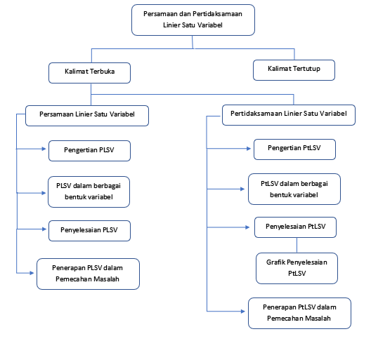

Kompetensi Inti
- Menghargai dan menghayati ajaran agama yang dianutnya.
- Menghargai dan menghayati perilaku jujur, disiplin, tanggungjawab, peduli (toleransi, gotong royong), santun, percaya diri, dalam berinteraksi secara efektif dengan lingkungan sosial dan alam dalam jangkauan pergaulan dan keberadaannya.
- Memahami pengetahuan (faktual, konseptual, dan prosedural) berdasarkan rasa ingin tahunya tentang ilmu pengetahuan, teknologi, seni, budaya terkait fenomena dan kejadian tampak mata.
- Mencoba, mengolah, dan menyaji dalam ranah konkret (menggunakan, mengurai, merangkai, memodifikasi, dan membuat) dan ranah abstrak (menulis, membaca, menghitung, menggambar, dan mengarang) sesuai dengan yang dipelajari di sekolah dan sumber lain yang sama dalam sudut pandang/teori.
Kompetensi Dasar
3.2 Menjelaskan persamaan dan pertidaksamaan linear satu variabel dan penyelesaiannya
4.2 Menyelesaikan masalah yang berkaitan dengan persamaan dan pertidaksamaan linear satu variabel
Peta Konsep
